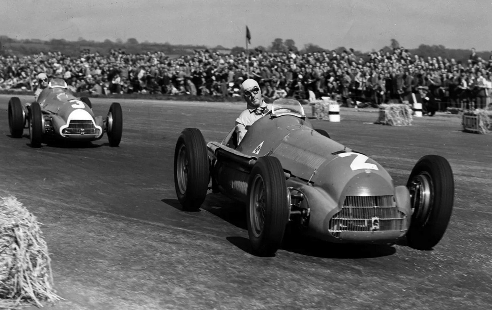
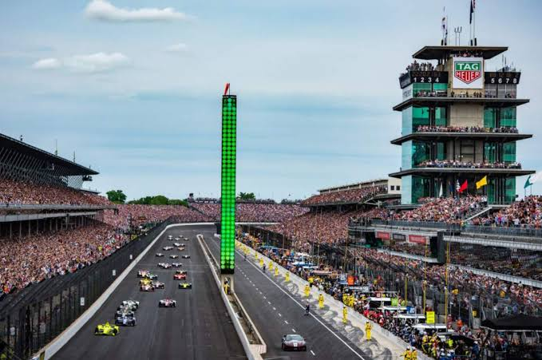
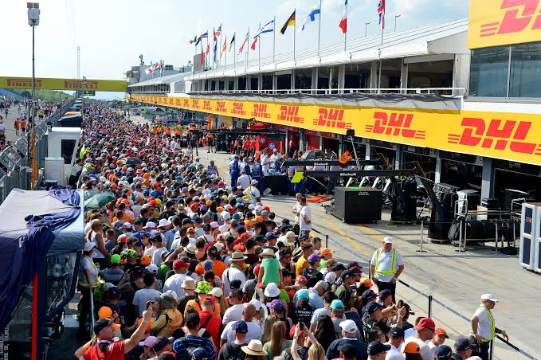
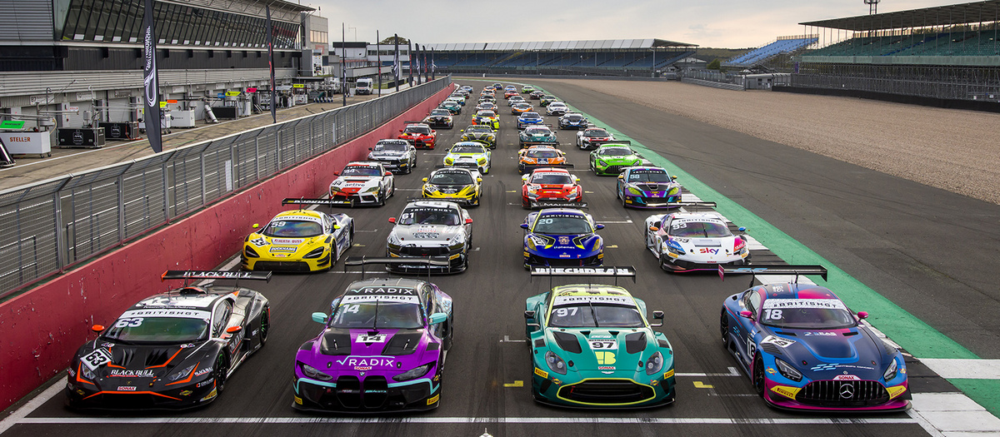
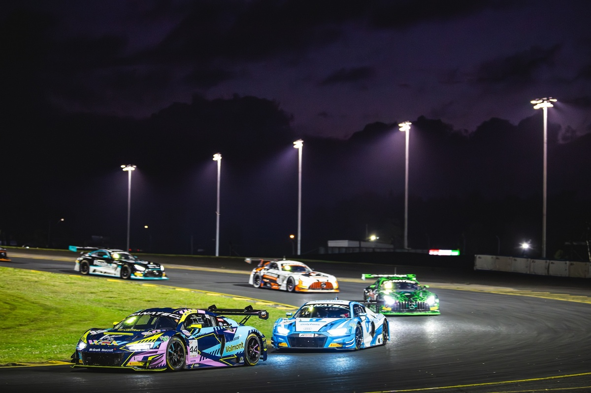
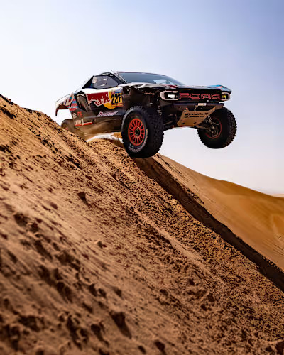
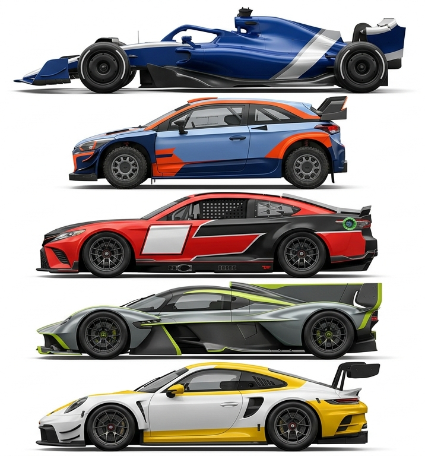

Átfogó betekintés a sebesség, a technológia és az emberi teljesítőképesség csúcskategóriáiba.
1. A nyitott kerekes és gyorsasági autósport világa
1.1. A Formula–1 története és evolúciója
A Formula–1 a világ legismertebb és legnépszerűbb autósport-bajnoksága. A hivatalos világbajnokság 1950-ben vette kezdetét Silverstone-ban. Az első évtizedekben a versenyzők élete folyamatos veszélyben forgott. Az autók felépítése és motorjai az évek során radikálisan átalakultak. A klasszikus szívómotorokat idővel turbófeltöltős egységek váltották fel. A biztonsági szabványok növelése minden korszakban kiemelt feladat maradt. Ma a sorozat a technológiai innovációk legfontosabb tesztpadjaként szolgál.
Az 1970-es években megjelent a szívóhatás és az aerodinamika forradalma. Colin Chapman és a Lotus csapat úttörő szerepet játszott ebben a folyamatban. Az autók kanyarsevessége ugrásszerűen megnőtt a leszorítóerő növekedésével. A pilótákra ható G-erők miatt a fizikai terhelés is radikálisan emelkedett. A szabályalkotók több alkalommal kénytelenek voltak korlátozni a szárnyak méretét. A biztonsági cellák bevezetése életmentő lépésnek bizonyult a sport történetében. Ezek a fejlesztések alapjaiban változtatták meg a puszta vezetés élményét.
A számítógépes elektronika az 1990-es évek elején vette át az irányítást. Az aktív felfüggesztés és a kipörgésgátló új korszakot nyitott a mezőnyben. A Williams csapat dominálta ezt az időszakot technológiai fölényének köszönhetően. A Nemzetközi Automobil Szövetség később betiltotta a legtöbb elektronikus segédletet. A cél a pilóták egyéni képességeinek előtérbe helyezése volt. A versengés így még élesebbé és kiszámíthatatlanabbá vált a pályákon. A rajongók kitörő lelkesedéssel fogadták a látványos emberi párharcokat.

1950- Silverstone
A hibrid éra 2014-es kezdete újabb mérföldkövet jelentett a sorozatban. A 1,6 literes V6-os turbómotorokat összetett energia-visszanyerő rendszerekkel szerelték fel. A Mercedes csapat éveken át verhetetlen teljesítményt nyújtott az új szabályok szerint. Az üzemanyag-hatékonyság központi eleme lett a fejlesztési stratégiáknak. A mérnökök rekordnagyságú termikus hatásfokot értek el az erőforrásokkal. A fenntarthatóság kérdése napjainkban még hangsúlyosabb szerepet kap. A jövőbeli szabályváltozások már a teljesen szintetikus üzemanyagokra épülnek.
A modern Formula–1 globális franchise-zá nőtte ki magát. A versenynaptár ma már több mint húsz helyszínt foglal magában világszerte. A hagyományos európai pályák mellett új városi aszfaltcsíkok is megjelentek. A közösségi média és a dokumentumfilmek új fiatal közönséget vonzottak be. A csapatok költségvetési plafonja kiegyenlítettebbé tette a küzdelmeket. A mérnöki precizitás és a vezetői tehetség továbbra is elengedhetetlen a sikerhez. A királykategória fényes jövő előtt áll a globális piacon.
1.2. A technológiai innovációk szerepe a királykategóriában
A Formula–1 mindig is az autóipari kutatás és fejlesztés élvonalában járt. A versenyautókban kipróbált megoldások gyakran átkerülnek a hétköznapi utcai modellekbe. A tárcsafékek korai alkalmazása komoly áttörést hozott a lassulási teljesítményben. A szénszálas kompozit anyagok használata forradalmasította a járműépítést. A könnyű és rendkívül erős szénszálas monocoque védelmet nyújt a pilótáknak. Az utcai sportautók ma már széles körben alkalmazzák ezt az építési elvet. A motorsport tehát közvetlenül hozzájárul a mindennapi közlekedés biztonságához.
Az aerodinamikai fejlesztések a legapróbb részletekre is kiterjednek. A mérnökök szélcsatornákat és szuperszámítógépes áramlástani szimulációkat használnak. Az első és hátsó szárnyak alakja folyamatosan változik a pályák karakterisztikájához igazodva. A DRS rendszer bevezetése megkönnyítette az előzéseket az egyenesekben. A padlólemez által termelt szívóhatás újra központi szerepet kapott a legújabb szabályokban. Az légellenállás csökkentése és a leszorítóerő növelése örökös egyensúlyozás. Minden milliméternyi változtatás meghatározhatja a köridő alakulását.
Az erőforrások hatékonysága az utóbbi évtizedben elképesztő mértékben növekedett. Az MGU-K és MGU-H rendszerek a fékezési és kipufogógáz-energiát gyűjtik össze. Az így eltárolt elektromos energia közvetlenül a kerekekre vagy a turbóra táplálható. Ez a komplex hibrid hajtáslánc rendkívül magas hatásfokot tesz lehetővé. Az akkumulátortechnológia fejlődése a lakossági elektromos autóknál is hasznosul. A mérnökök folyamatosan feszegetik a fizika és a kémia határait. Az energiahatékonyság kulcsfontosságúvá vált a modern járműiparban.
A telemetria és az adatgyűjtés alapvető része a modern versenymérnökségnek. Több száz szenzor továbbít valós idejű adatokat a bokszutcai mérnökök számítógépeire. Az guminyomás, a hőmérséklet és a hajtáslánc állapota folyamatosan ellenőrzött. A felhőalapú elemzések segítik a legoptimálisabb versenystratégia kiválasztását. A pilóták a kormánykijelzőn kapnak azonnali visszajelzést a jármű viselkedéséről. Az adatok alapján a csapatok még a futam alatt is tudnak finomhangolásokat végezni. A digitalizáció nélkül a mai autósport már elképzelhetetlen lenne.
A szimulátorok világa mára a felkészülés legfontosabb elemévé vált. A tesztelési korlátozások miatt a pilóták ideje korlátozott a valódi aszfalton. A hipermodern szimulátorok hihetetlenül pontosan modellezik a pályák felületét. A versenyzők több ezer kilométert vezetnek virtuálisan egy-egy hétvége előtt. A mérnökök a virtuális térben próbálják ki az új alkatrészeket és beállításokat. Ez a módszer jelentős költségcsökkentést és hatékonyságot eredményez a csapatoknál. A virtuális és a valós világ határai egyre inkább elmosódnak.
1.3. Az IndyCar és az amerikai nyitott kerekes versenyzés
Az IndyCar sorozat az észak-amerikai nyitott kerekes versenyzés legmagasabb szintje. A bajnokság különlegessége a rendkívül változatos pályaösszetételből fakad. A mezőny klasszikus épített pályákon, utcai körökön és ovál pályákon egyaránt összeméri erejét. Az épített oválpályák teljesen egyedi vezetési technikát igényelnek a pilótáktól. Az autók sebessége az oválokon eléri a háromszázötven kilométer per órát is. A legkisebb hibának is súlyos következményei lehetnek a falak közelsége miatt. Ez a sokszínűség igazi univerzális versenyzői képességeket követel meg.
Az Indianapolis 500 a világ egyik legrégibb és legprestízsesebb autóversenye. A versenyt először 1911-ben rendezték meg a híres ohiói jellegű téglaaszfalton. A győztes tradicionálisan egy üveg tejet kap az ünneplés során a dobogón. A kétszáz körös megmérettetés a fizikai és szellemi állóképesség végső tesztje. A nézőtérről több százezer szurkoló követi figyelemmel az izgalmas eseményeket. A felkészülés heteken át tart a májusi nagy verseny előtt. A győzelem megváltoztatja egy pilóta teljes karrierjét és megítélését.
Az IndyCar-ban használt szériasaszik szorosabb versengést tesznek lehetővé. Mivel minden csapat a Dallara által gyártott alvázat használja, a különbségek kicsik. A motorgyártók közötti rivalizálás a Honda és a Chevrolet között zajlik. A csapattagok finomhangolási képessége határozza meg a végső teljesítményt. Az egyenautó koncepció miatt a versenyző egyéni tudása sokkal jobban érvényesül. A futamokon rendkívül sok előzést és fordulatos csatát láthatnak a nézők. A pole pozícióból induló versenyző sem mehet biztosra a győzelmet illetően.
Az Aeroscreen védőeszköz bevezetése új fejezetet nyitott a biztonságtechnikában. Ez az üveggyapot és szénszálas szerkezet megvédi a pilóta fejét a repülő törmelékektől. A szélvédőszerű megoldást a Red Bull Advanced Technologies csapatával közösen fejlesztették ki. A szerkezet több éles helyzetben is bizonyította már életmentő hatékonyságát. A légkondicionálás hiánya miatt a pilótafülke hőmérséklete komoly kihívást jelent. A mérnökök folyamatosan dolgoznak a hűtési rendszerek javításán. Az Aeroscreen sikerét látva más sorozatok is tanulmányozzák a megvalósítást.
Az amerikai autósport kultúrája nagyban különbözik az európai megközelítéstől. A szurkolók közvetlenebb kapcsolatba kerülhetnek a pilótákkal és a csapatokkal. A nyitott paddock infrastruktúra lehetővé teszi a rajongók számára a betekintést. A versenyhétvégék igazi családi fesztiválként működnek az egyes államokban. Sok európai pilóta próbál szerencsét az IndyCar izgalmas világában. A sorozat nemzetközi elismertsége folyamatosan növekszik az elmúlt években. Az észak-amerikai bajnokság továbbra is tartja előkelő helyét a motorsportban.

Indianapolis 500
1.4. A pilóták fizikai és mentális felkészülése
A modern autóversenyzők élsportolóként élik mindennapjaikat a szezon során. A kanyarokban fellépő hatalmas G-erők elképesztő megterhelést jelentenek a nyakizomzatnak. A pilótáknak speciális erősítő gyakorlatokat kell végezniük a sérülések elkerüléséhez. A törzsizomzat stabilitása elengedhetetlen a precíz kormányzási mozdulatok megtartásához. A kardiovaszkuláris edzések segítik az alacsony pulzusszám megőrzését a hőségben. Egy átlagos futam során a versenyzők akár több kilogramm folyadékot is veszíthetnek. A fizikai állóképesség hiánya azonnali koncentrációvesztéshez és hibákhoz vezet.
A reakcióidő fejlesztése alapvető elem a versenyzők napi edzéstervében. A pilóták fényreflexiós táblákon és speciális szoftvereken gyakorolják a gyors reagálást. A másodperc tört része alatt kell meghozniuk a helyes döntéseket a pályán. A vizuális koordináció és a térbeli tájékozódás folyamatos tréninget igényel. A szemszárazság és a fáradtság elkerülésére külön szemtorna gyakorlatokat használnak. A szimulátoros edzések a reakcióidő mellett a pályaismeretet is mélyítik. A leggyorsabb reakcióval rendelkező pilóta komoly előnybe kerül a rajtnál.
A táplálkozás és a hidratáció szerepe felbecsülhetetlen a versenyhétvégéken. A sporttáplálkozási szakértők szigorú diétát állítanak össze a pilóták számára. A szénhidrátok és a fehérjék megfelelő aránya biztosítja a fenntartható energiát. A futamok előtti és alatti folyadékpótlás kulcsfontosságú a kiszáradás megelőzésében. Az elektrolit-háztartás egyensúlya megakadályozza az izomgörcsök kialakulását a pilótafülkében. A súlykontroll kiemelten fontos, hiszen minden plusz gramm lassítja a járművet. A profi felkészülés a konyhában kezdődik és az aszfalton teljesedik ki.
A mentális felkészülés legalább olyan fontos, mint a fizikai kondíció elérése. A sportpszichológusok segítik a versenyzőket a stressz és a nyomás kezelésében. A vizualizációs technikák segítségével a pilóták fejben többször is lefutják a kört. Ez a módszer segít a fókusz fenntartásában és a hibák számának csökkentésében. A kudarcok és balesetek feldolgozása elengedhetetlen a magabiztosság visszaszerzéséhez. A rajtrácson uralkodó káoszban a pilótának meg kell őriznie a belső nyugalmát. A mentálisan legerősebb versenyzők tudnak a legjobban teljesíteni kiélezett helyzetben.
A regeneráció és az alvásminőség garantálja a tartós csúcsteljesítményt. A sűrű utazási órarend és az időeltolódás komoly megterhelést jelent a szervezetnek. A pilóták krioterápiát és masszázst alkalmaznak az izmok gyorsabb felépüléséhez. Az alvási ciklusok optimalizálása segít megelőzni a jetlag káros hatásait. A pihenésre szánt idő tudatos megtervezése elengedhetetlen a hosszú szezonban. A kipihent versenyző tisztább döntéseket hoz a nagy sebességű csatákban. A professzionális háttércsapat minden részletre odafigyel a sikeres szereplésért.
1.5. A bokszutcai stratégia és a csapatmunka dinamikája
Az autóversenyzés nem egyéni, hanem összetett csapatsportág a háttérben. A mérnökök, a szerelők és a stratégák szoros együttműködésben dolgoznak a sikerért. A bokszutcában végrehajtott kerékcserék másodpercek alatt dönthetik el a futam kimenetelét. A szerelők hónapokon át gyakorolják a leggyorsabb mozdulatokat a műhelyben. Egyetlen hibás mozdulat vagy beszorult csavar több helyezés elvesztését jelentheti. A szerelők közötti tökéletes szinkronizáció lenyűgöző látványt nyújt a nézőknek. A felkészültség és a nyugalom elengedhetetlen a fülsiketítő zajban és feszültségben.
A versenystratégiai döntések meghozatala a legfejlettebb szoftverekre és adatokra épül. A stratégák folyamatosan elemzik az időjárás-előrejelzést és az abroncsok kopását. A biztonsági autós fázisok azonnali reagálást követelnek meg a csapatvezetésről. Az úgynevezett elévágási taktika során a pilóta korábban vált friss gumikra. Ez a lépés lehetővé teszi az ellenfél megelőzését a bokszkiállások során. A riválisok reakcióinak előrejelzése igazi sakkmérkőzéshez hasonlítható a pályán. A jó stratégia gyakran pótolni tudja a nyers versenytempó hiányosságait.
A pilóta és a versenymérnök közötti rádiókommunikáció létfontosságú az egész futamon. A mérnök folyamatosan tájékoztatja a vezetőt az időkülönbségekről és a gumiállapotról. A pilótának vissza kell jeleznie a jármű egyensúlyáról és a pálya tapadásáról. A rövid, egyértelmű üzenetek megelőzik a félreértéseket a nagy sebességnél. A bizalom a pilóta és a mérnöke között éveken át formálódik és mélyül. A feszült pillanatokban a mérnök higgadtsága megnyugtathatja a versenyzőt. Ez a pszichológiai kapcsolat döntő fontosságú lehet a kritikus szituációkban.
A gumiválasztás és a gumikezelés határozza meg a versenytempó állandóságát. A gyártók különböző keménységű keverékeket biztosítanak a hétvégékre. A lágyabb abroncsok gyorsabb köridőt tesznek lehetővé, de hamarabb elhasználódnak. A keményebb keverékek tartósabbak, ám nehezebb őket az optimális hőfokra melegíteni. A pilótáknak óvniuk kell a gumikat a túlmelegedéstől és a szemcsésedéstől. Az aszfalt hőmérsékletének változása jelentősen módosíthatja a stratégiát. A gumimanagement igazi művészet a modern autóversenyzés világában.
A gyárban dolgozó háttérszemélyzet munkája nélkülözhetetlen a győzelemhez. Több száz tervező és technikus dolgozik az alkatrészek folyamatos fejlesztésén. A csapattagok visszajelzései alapján gyártják le az új aerodinamikai elemeket. A minőségellenőrzés szigorú folyamata megelőzi a mechanikai meghibásodásokat. A sikeres csapatok kultúrája a folyamatos fejlődésre és a hibák kijavítására épül. A trófeát a pilóta veszi át, de a siker az egész kollektíva érdeme. Az összefogás és a közös cél teszi naggyá a legjobb istállókat.

Bokszutca
2. Túraautók, sportautók és a megbízhatósági versenyek
2.1. A Le Mans-i 24 órás verseny legendája
A Le Mans-i 24 órás futam a megbízhatósági autóversenyzés leghíresebb eseménye. A futamot először 1923-ban rendezik meg Franciaországban, Sarthe megyében. A pálya egy része közúti szakaszokból áll, amelyeket erre an alkalomra zárnak le. A hírhedt Mulsanne egyenesben az autók óriási csúcssebességet érnek el. A verseny nemcsak a gyorsaságról, hanem az alkatrészek tartósságáról is szól. A gyártók számára a győzelem itt óriási marketingértékkel és presztízzsel bír. Számtalan drámai pillanat és történelmi párharc fűződik a rendezvényhez.
A verseny egyedi kihívása a huszonnégy órás folyamatos száguldásban rejlik. Az autóknak kibírhatóak kell lenniük a megállás nélküli extrém terhelést. A motorok, a váltók és a fékrendszerek a határon működnek a teljes táv alatt. A szerelőknek készen kell állniuk az azonnali, gyors javításokra a bokszban. Egy elhúzódó szerelés végzetes időveszteséget jelenthet az élmezőnyben. A mérnökök folyamatosan figyelik az alkatrészek elhasználódásának mértékét. A célvonalat átlépni már önmagában is hatalmas teljesítménynek számít.
A többkategóriás versenyzési modell különleges dinamikát ad a futamnak. A leggyorsabb prototípusok és a szériaalapú GT autók egyszerre vannak a pályán. A sebességkülönbségek miatt a lassabb autók lekörözése folyamatos figyelmet igényel. A pilótáknak másodpercenként kell mérlegelniük az előzési kockázatokat. A forgalomkezelés a győzelem egyik legfontosabb kulcseleme Le Mans-ban. A pályán lévő sok autó miatt a balesetek kockázata is jóval magasabb. A nézők folyamatos akciót láthatnak a pálya minden egyes szektorában.
A Hypercar kategória nemrégiben új aranykort hozott a megbízhatósági versenyzésbe. Nagy autógyártók tértek vissza a királykategóriába saját fejlesztésű hibridjeikkel. A Toyota, a Ferrari, a Porsche és a Peugeot lenyűgöző csatákat vív egymással. A szabályok célja a költségek kontrollálása és a szoros versengés biztosítása. A teljesítménykiegyenlítő rendszer gondoskodik a mezőny egyensúlyáról. Ez az új éra újjáélesztette a rajongók és a szponzorok érdeklődését. A kétszáznegyven ezer feletti nézősereg felejthetetlen hangulatot teremt.
A Le Mans-i tradíciók mélyen gyökereznek az autósport történetében. A klasszikus "Le Mans-i rajt", ahol a pilóták az autókhoz futottak, ikonikus volt. Bár a biztonság miatt ezt eltörölték, a felvezető kör utáni repülőrajt továbbra is látványos. A kockás zászló intése után a győztesek pezsgőfürdővel ünnepelnek a tribünön. A verseny szellemisége a kitartásról, a csapatszellemről és az innovációról szól. Nem véletlen, hogy ez a viadal képezi a motorsport Tripla Koronájának egyik ágát. Le Mans örökre az autósport legfényesebb drágaköve marad.
2.2. A GT3 és GT4 kategóriák felemelkedése
A GT3 szabályrendszer az utóbbi évtizedek legsikeresebb koncepciója a sportautózásban. Stéphane Ratel hozta létre a kategóriát azzal a céllal, hogy privatéroknak adjon teret. A versenyautók közvetlenül a sorozatgyártású szupersportautók alapjaira épülnek. A vásárlók olyan márkák közül választhatnak, mint a Porsche, Audi vagy Aston Martin. Az ügyfélversenyzés modellje gazdaságilag is fenntarthatóvá tette a bajnokságokat. A gyártók kész versenyautókat és alkatrész-utánpótlást biztosítanak a csapatoknak. Ez a megközelítés világszerte elterjedt a nemzeti és nemzetközi szériákban.
A Teljesítménykiegyenlítés, azaz a BoP rendszer a GT3 kategória lelke. A szervezők súlybüntetésekkel és szűkítőkkel egyenlítik ki az autók közötti különbségeket. Ez megakadályozza, hogy egyetlen márka elhúzzon a mezőnytől a fejlesztési előnye miatt. A különböző motorkonstrukciók így egyenlő esélyekkel indulnak a futamokon. A középmotoros, az orrmotoros és a far-motoros kocsik látványos harcot vívnak. A BoP adatrendszere folyamatosan elemzi az egyes modellek telemetriáját. Ennek köszönhetően a pilóták képességei döntik el a helyezések sorsát.
A GT4 kategória a belépő szintet jelenti a professzionális sportautózás világába. Az autók közelebb állnak a gyári utcai változatokhoz, mint a GT3-as gépek. Az alacsonyabb fenntartási költségek miatt rendkívül népszerű a fiatal tehetségek körében. A fiatal pilóták itt tanulhatják meg a GT autóvezetés alapvető fogásait. A kategória versenyei rendkívül szorosak és kiszámíthatatlan kimenetelűek. Sok amatőr és profi versenyző alkot sikeres párosokat ebben a szériában. A GT4 remek ugródeszkát jelent a magasabb szintű nemzetközi bajnokságok felé.
A GT endurance futamok ikonikus helyszíneken vonzzák a legnépesebb mezőnyöket. A Spa-francorchamps-i és a Nürburgring-i 24 órás versenyt száz feletti autó teljesíti. Az időjárás kiszámíthatatlansága ezeken a pályákon még izgalmasabbá teszi a csatákat. A pilótáknak fel kell készülniük a hirtelen lecsapó esőzésre és a ködre is. A különböző kategóriájú autók egyidejű jelenléte állandó előzési helyzeteket teremt. A taktika és a hibátlan vezetés elengedhetetlen a dobogós helyezések eléréséhez. A szurkolók sátorozva követik végig az egész éjszakán át tartó száguldást.
A GT kategóriák jövője a fenntartható hajtásláncok és üzemanyagok felé mutat. A szintetikus üzemanyagok tesztelése már megkezdődött a nagyobb bajnokságokban. A hybrid rendszerek fokozatos bevezetése sem áll távol a jövőbeli tervektől. A gyártók számára a GT versenyzés továbbra is tökéletes marketingfelület. Az ügyfélsport üzleti modellje stabilitást biztosít a csapatok számára. A látványos karosszériák és a dörgő hangok lebilincselik a közönséget. A GT kategória virágzása a következő évtizedben is garantáltnak látszik.
2.3. A túraautó-bajnokságok jellegzetességei
A túraautó-versenyzés az egyik legközvetlenebb és legkeményebb műfaja az autósportnak. A versengő gépek a mindennapi utcai ferdehátúak és szedánok átalakított változatai. A karosszériák megjelenése ismerős a rajongók számára az utcai közlekedésből. A futamok általában rövidebbek, de rendkívül intenzív adok-kapok harcot hoznak. A koccanások és a karosszéria-kontaktusok mindennaposak a pozícióharcok során. A pilótáknak agresszív, mégis pontos vezetési stílust kell képviselniük. Ez a műfaj a közönség szempontjából az egyik leglátványosabb küzdelmet nyújtja.
A TCR szabályrendszer globális sikert aratott az elmúlt évtizedben. Az elöl hajtott, kétliteres turbómotoros autók alacsony költségekkel üzemeltethetők. Számos nemzeti és nemzetközi bajnokság alkalmazza ezt a pontos előírást. A fiatal tehetségek és a tapasztalt veteránok egymás ellen küzdenek a pályán. A kiegyenlített teljesítmény miatt a rajtpozíciók sorsa ezredmásodperceken múlik. A fordított rajtrácsos futamok tovább fokozzák a drámát és az előzési kényszert. A TCR koncepció bizonyította életképességét a modern motorsport világában.
A német DTM bajnokság gazdag történelemmel és különleges státusszal rendelkezik. A sziluett-autók korszaka ikonikus csatákat hozott a Mercedes, BMW és Audi között. Az elképesztő aerodinamikával felszerelt gépek közelebb álltak a prototípusokhoz. A költségek növekedése miatt a sorozat később átállt a GT3-as szabályrendszerre. Ez a váltás új lendületet adott a DTM-nek és szélesítette a résztvevő márkák körét. A profi csapatok és gyári pilóták jelenléte garantálja a legmagasabb színvonalat. A DTM továbbra is Európa egyik legnépszerűbb és legnézettebb versenysorozata.
A túraautózásban az elsőkerék-hajtás egyedi kezelési technikát igényel a vezetőtől. Az első gumikra nehezedik a kormányzás, a fékezés és a kigyorsítás feladata is. A túlmelegedés és az alulkormányozottság elkerülése komoly odafigyelést igényel. A hátsó tengely kikönnyítése segít az autó befordításában a szűk kanyarokban. A pilóták gyakran két lábbal pedáloznak a jobb egyensúly fenntartása érdekében. A vezetési stílus finomhangolása határozza meg a gumik élettartamát a futamon. A mesteri autókezelés itt is elengedhetetlen a siker eléréséhez.
A túraautó-bajnokságok látványos előzéseikről és izgalmas végjátékukról híresek. A pályák kialakítása gyakran kedvez a szélárnyékból történő támadásoknak. A kerek a kerék elleni küzdelemben a versenyzők nem kímélik egymás járművét. A versenybíróknak gyakran kell szigorú büntetéseket kiszabniuk a szabálytalanságokért. A fair play és az agresszió közötti keskeny mezsgyén kell egyensúlyozni. A rajongók imádják a kiszámíthatatlan kimenetelt és a szoros befutókat. A túraautózás a motorsport egyik legszórakoztatóbb és legélvezetesebb ága.
2.4. A hosszú távú versenyek egyedi taktikai elemei
A megbízhatósági versenyzésben a taktika legalább olyan fontos, mint a nyers tempó. A csapatoknak nemcsak órákra, hanem az egész napra előre kell tervezniük. Az üzemanyag-fogyasztás menedzselése meghatározza a kiállások számát és időpontját. A biztonságos, de hatékony vezetési stílus megkíméli a jármű főegységeit. A mérnökök folyamatosan kiszámítják a legoptimálisabb etap-hosszúságokat. Egy váratlan esőzés vagy baleset felülírhatja a teljes korábbi elgondolást. A rugalmasság és az alkalmazkodóképesség a sikeres stratégia kulcsa.
Az abroncsok használata a megbízhatósági futamokon különleges figyelmet kap. A dupla vagy tripla etapok teljesítése ugyanazzal a gumisettel időt takarít meg. A bokszban eltöltött idő csökkentése érdekében a gumicsere kihagyható. Ehhez azonban a pilótának óvnia kell a gumi szerkezetét a kopástól. A hideg aszfalton a gumik felmelegítése óriási kockázatot hordoz magában. A jó gumiválasztás változó időjárás esetén több kört is hozhat a konyhára. A gumistratégia mesterfokú alkalmazása győzelmet érhet a célvonalnál.
A pályán lévő sárga zászlós és biztonsági autós fázisok kulcsfontosságúak. A "Code 60" és a virtuális biztonsági autó szabályai megváltoztatták a taktikát. A jó időben végrehajtott bokszkiállás jelentős időelőnyt biztosíthat a riválisokkal szemben. A stratégáknak pillanatok alatt kell meghozniuk a legnehezebb döntéseket. Egy rosszul időzített kiállás pozíciók tucatjainak elvesztésével járhat. A kommunikáció a bokszutca és a vezető között ilyenkor leterhelt. A tapasztalt csapatok az ilyen kaotikus helyzetekből jönnek ki győztesen.
Az autók megbízhatósági tesztelése hónapokkal a versenyek előtt megkezdődik. A mérnökök harmincórás szimulációs teszteket hajtanak végre a tesztpályákon. Minden alkatrészt a töréshatárig terhelnek a hibák időbeni feltárására. A hűtőrendszerek hatékonysága kiemelten fontos a motor védelmében. A fékrendszer hűtése és az ablakmosó folyadék utántöltése is tervezett folyamat. A mechanikai meghibásodások elkerülése a precíz előkészítésen múlik. A felkészült csapatok ritkán szembesülnek váratlan műszaki hibával.
A hosszú távú versenyzés az emberi és a technikai határok végső tesztje. A csapatok minden tagjának maximális fókuszra van szüksége a teljes táv alatt. A hibák elkerülése fontosabb, mint a leggyorsabb köridő megfutása a pályán. A konzisztens köridők hozzák meg a kívánt eredményt a huszonnégy óra végén. A célvonalon való áthaladáskor érzett megkönnyebbülés leírhatatlan élmény. A közösen elért siker örökre összefonja a csapattagok közösségét. Ez teszi a megbízhatósági versenyzést az autósport legszebb kihívásává.
2.5. A pilótacserék és az éjszakai száguldás kihívásai
A pilótacserék precíz koreográfiát igényelnek a bokszkiállások alkalmával. Az ülésbetétek cseréje és a biztonsági övek becsatolása másodpercek alatt történik. A kimenő és a bejövő pilótának tökéletes összhangban kell mozdulnia. A rádió- és itatórendszer csatlakoztatása szintén elengedhetetlen lépés. A fizikai fáradtság ellenére a váltásnak hibátlanul kell lezajlania. Egy felakadt öv vagy rossz ülés pozíció értékes időveszteséget okoz. A csapatok számtalanszor elgyakorolják ezt a folyamatot a verseny előtt.
Az éjszakai vezetés a megbízhatósági futamok legnehezebb és legveszélyesebb része. A látási viszonyok drasztikusan lecsökkennek a pálya sötét szakaszaiban. A pilótáknak csak az autó fényszóróira és a pálya bójáira kell hagyatkozniuk. A fényszórók tisztítása a bokszkiállásokkor kiemelt feladat a szerelőknek. A rovarok és a gumi-törmelékek gyorsan rontják a világítás hatékonyságát. A sötétben a sebességérzékelés megváltozik és a féktávok nehezebben megbecsülhetők. Az éjszakai fázisban mutatott tempó gyakran eldönti a verseny végső kimenetelét.
A hőmérséklet drasztikus csökkenése az éjszaka folyamán megváltoztatja a pálya tulajdonságait. A hideg aszfalton a gumik nehezebben érik el az optimális működési tartományt. A motorok ugyanakkor több hideg levegőhöz jutnak, így a teljesítményük növekszik. Az aerodinamikai egyensúly is eltolódhat a sűrűbb levegő jelenléte miatt. A pilótáknak gyorsan kell alkalmazkodniuk a megváltozott tapadási viszonyokhoz. A páralecsapódás és a köd tovább nehezítheti a vezetési körülményeket. A hideg éjszakai órák a legkeményebb próbát jelentik minden résztvevőnek.
A pilóták alvási és pihenési ciklusainak kezelése kiemelt prioritás. Az etapok között a versenyzőknek rövid idő alatt kell felfrissülniük. A motorhome-okban kialakított csendes szobák segítik a pihenést. A fizio-therapeuták masszázzsal és nyújtással segítik az izmok ellazulását. A hajnali órákban fellépő mentális holtpont leküzdése óriási akaraterőt igényel. A koffein és a speciális étrend-kiegészítők használata megengedett segítség. A napfelkelte pillanata új energiát ad a fáradt versenyzőknek.
A napfelkelte az éjszakai műszak végét és a végső hajrá kezdetét jelzi. A felkelő nap vakító fénye újabb veszélyforrást jelent a kanyarokban. A pálya melegedésével a tapadási szintek ismét átalakulnak az aszfalton. A még versenyben lévő autók szerkezeti állapota már erősen elhasznált. A pilótáknak az utolsó órákban is meg kell őrizniük a maximális fókuszt. A célvonal átlépése az éjszakai megpróbáltatások után leírhatatlan katarzis. Az éjszakai száguldás élménye örökre megmarad a résztvevők emlékezetében.

Start

Éjszaka
3. A rali, a tereprali és az extrém versenysorozatok
3.1. A Rali-világbajnokság (WRC) története és szakaszai
A Rali-világbajnokság a motorsportok legsokoldalúbb és legembertpróbálóbb ága. A versenyeket nem zárt aszfaltcsíkokon, hanem közutakon és erdei ösvényeken rendezik. A bajnokság 1973-ban indult útjára a nemzetközi szövetség szervezésében. A mezőny a legváltozatosabb felületeken küzd meg az idővel és a stopperrel. A havas svéd utaktól a poros görög sziklákig terjed a kihívások sora. A változékony időjárás és a kiszámíthatatlan útfelület folyamatos koncentrációt követel. A WRC igazi kultikus státuszt vívott ki magának a szurkolók körében.
A B-csoportos raliautók korszaka az 1980-as években az autósport aranykorát jelentette. A korlátozások nélküli motorteljesítmény és a könnyű építés elképesztő autókhoz vezetett. Az Audi Quattro összkerékhajtású rendszere forradalmasította a szakágat. A szörnyetegek teljesítménye meghaladta az ötszáz lóerőt a laza talajon. A nézők félelem nélkül álltak a pálya szélén a száguldó kocsik közvetlen közelében. A halálos balesetek sora miatt a szövetség végül betiltotta a kategóriát. A B-csoport emléke mindmáig élő és meghatározó a rali szerelmeseinek.
A modern Rally1-es autók a legfejlettebb hibrid technológiát alkalmazzák napjainkban. A belső égésű motorokat kiegészítő elektromos hajtás extra teljesítményt biztosít. A csővázas szerkezet és a szénszálas elemek maximális védelmet nyújtanak. Az aerodinamikai csomagok hatalmas leszorítóerőt termelnek még a csúszós talajon is. A mérnökök számítógépes modellezéssel optimalizálják a felfüggesztés geometriáját. Az autók gyorsulása és kanyarsevessége minden korábbit felülmúl. Ez a technológia méltó utódja a ralisport gazdag történelmének.
A navigátor szerepe elengedhetetlen a raliautó eredményes irányításában. A navigátor az itinerből olvassa fel a kanyarok erősségét és a veszélyeket. A pilóta vakon megbízik a mellette ülő társának pontos utasításaiban. A ritmus és a tempó megtartása a két ember tökéletes szinkronján múlik. Egyetlen elvétett itiner-jegyzet is súlyos balesethez vezethet a fák között. A navigátorok mentális teherbírása és precizitása elképesztő magasságokba mutat. A rali igazi párossport, ahol két ember küzd egy közös célért.
A szervizpark a raliversenyek lüktető szíve és logisztikai központja. A szerelőknek meghatározott időkereten belül kell elvégezniük az autó javításait. Egy árokbacsúszás utáni sérült karosszériát percek alatt kell újjáépíteniük. A cserealkatrészek és szerszámok elrendezése katonai fegyelmet követel meg. A taktikai döntések a gumiválasztásról szintén a szervizparkban születnek meg. Az időbüntetések elkerülése érdekében a csapat minden tagja feszülten dolgozik. A szervizparki munka drámaisága vetekszik a pályán zajló küzdelemmel.
3.2. A Dakar-rali kihívásai a sivatagi terepen
A Dakar-rali a világ legkeményebb és leghosszabb tereprali megmérettetése. Thierry Sabine alapította a versenyt a Párizs és Dakar közötti útvonalon. A biztonsági és politikai helyzet miatt a verseny helyszíne többször változott. Dél-Amerika után napjainkban Szaúd-Arábia sivatagai adnak otthont a viadalnak. A versenyzők kéthetes megpróbáltatás során több ezer kilométert tesznek meg. A végtelen dűnék, a sziklás kanyonok és a homokviharok mindennaposak. A Dakar teljesítése önmagában is felér egy emberfeletti győzelemmel.

Dakar rally
A navigáció a Dakar-rali sikerének legfontosabb és legnehezebb pillére. A résztvevők csak a papíralapú vagy digitális itinerre támaszkodhatnak. A GPS használata szigorúan korlátozott és csak ellenőrző pontoknál engedélyezett. A sivatagban nincsenek kiépített utak vagy jól látható tájékozódási pontok. A navigációs hiba miatti eltévedés órákig tartó időveszteséget eredményezhet. A dűnék közötti tájékozódás igazi művészetet és éles szemléletet igényel. A jó navigátor aranyat ér a sivatagi forgatag közepette.
A mezőny rendkívül sokszínű, a motorkerékpároktól a kamionokig terjed. A motorosok védtelenül teljesítik a napi több száz kilométeres szakaszokat. Az autók kategóriájában a speciálisan épített csővázas prototípusok dominálnak. A több ezer lóerős szörnyeteg kamionok látványa lebilincselő a dűnéken. A különböző kategóriák közötti előzések súlyos balesetveszélyt hordoznak. A porterhelés miatt a látótávolság gyakran nullára csökken a haladás során. Ez a sokféleség teszi a Dakart egyedülállóvá a motorsportok térképén.
A fizikai és mentális kimerültség a verseny előrehaladtával folyamatosan halmozódik. A versenyzők naponta alig néhány órát tudnak pihenni a sátortáborban. A hajnali rajtig a járműveket is teljesen fel kell újítani a szerelőknek. A sivatagi hőség nappal, míg a fagyos hideg éjszaka méri csapást a szervezetre. A kiszáradás és az izomfájdalmak leküzdése mindennapos feladat a táborban. Az akaraterő és a kitartás teszi lehetővé a küzdelem folytatását. Csak a legszívósabb versenyzők érhetik el a célvonalat a kéthetes hajsza végén.
A bajtársiasság és a segítségnyújtás a Dakar-rali elmaradhatatlan eszméje. A bajba jutott versenytársak megsegítése íratlan szabály a résztvevők között. A műszaki hibás vagy felborult járművek mentésében sokan önzetlenül segítenek. A szervezet jóváírja a segítségnyújtással eltöltött időt a végeredménynél. Ez az emberi hozzáállás kiemeli a Dakart a többi professzionális versenysorozat közül. A sivatag közösséget formál a világ minden tájáról érkező indulókból. A Dakar szellemisége a sportemberi nagyság legszebb példája.
3.3. A ralikrossz pörgős világa és kontaktsport jellege
A ralikrossz az autósport egyik legdinamikusabb és leglátványosabb szakága. A futamokat zárt, vegyes borítású aszfaltos és murvás pályákon rendezik. A rövid, mindössze néhány körös futamok folyamatos feszültséget garantálnak. A rajtrácson egyszerre több, akár hatszáz lóerős autó sorakozik fel. Az autók gyorsulása nulláról száz kilométer per órát felülmúlja a Formula–1-et. A test a test elleni küzdelem és a koccanások teljesen elfogadottak. A közönség számára a közvetlen rálátás a pályára felejthetetlen élményt nyújt.
A Joker-kör bevezetése forradalmasította a ralikrossz taktikai elemeit. Minden pilótának kötelező egyszer teljesítenie egy hosszabb, alternatív nyomvonalat. A Joker-kör időzítése határozza meg a pozíciók sorsát a futam során. A csapattagok rádiókon keresztül segítik a pilótát a helyes döntés meghozatalában. Egy jókor teljesített kanyarívvel megelőzhető az előttünk haladó rivális. Ez a szabály megakadályozza a vonatozást és állandó izgalmakat generál. A stratégiai érzék legalább olyan fontos, mint a nyers gázadási bátorság.
A Supercar kategória versenygépei a technika csúcsát képviselik a szakágban. Az összkerékhajtású, turbómotoros szörnyetegek elképesztő tapadást produkálnak. A rajtok pillanatában felszabaduló energia szinte megremegteti a lelátókat. A pilótáknak elképesztő reflexekkel kell reagálniuk a piros lámpák kialvására. Az első kanyarban kialakuló tolakodás gyakran döntő fontosságú a futamra nézve. A karosszériák sérülései mindennaposak a kemény pozícióharcok következtében. A szerelők óriási munkát végzenek az egyes előfutamok közötti szünetekben.
A pályák vegyes borítása egyedi autókezelési technikát követel meg a vezetőtől. Az aszfaltról a murvára való áttérés pillanatában a tapadás drasztikusan lecsökken. A pilótáknak csúsztatva, drifting stílusban kell terelniük a járművet a kanyarokban. A kézifék használata elengedhetetlen a szűk hajtűkanyarok bevétele során. A portartalom és a felpattanó kavicsok nehezítik a mögött haladók látását. Az autó beállításainak alkalmazkodniuk kell a két teljesen eltérő felülethez. A sokoldalú vezetői képességek azonnal megmutatkoznak a köridőkben.
A ralikrossz a fiatalabb generációk és az online közvetítések kedvencévé vált. A rövid, tömör futamok tökéletesen illeszkednek a modern tartalomfogyasztási szokásokhoz. Az elektromos hajtásláncok megjelenése új dimenziót nyitott a bajnokságban. Az azonnali nyomaték még brutálisabb kigyorsításokat tesz lehetővé a rajtnál. A környezetbarát technológia és az extrém teljesítmény jól megfér egymás mellett. A sportág folyamatosan megújul, hogy megtartsa vezető szerepét a szórakoztatásban. A ralikrossz jövője izgalmas és technológiailag élenjáró irányba mutat.
3.4. Az elektromos versenysorozatok jövője
A Formula E volt az első teljesen elektromos nyitott kerekes versenysorozat. Alejandro Agag látomása nyomán a bajnokság 2014-ben indult útjára Pekingben. A versenyeket a világ legnagyobb metropoliszainak belvárosi utcáin rendezik meg. Ez a koncepció közvetlenül a nagyvárosi lakossághoz viszi el az autósportot. A csendesebb hajtásláncok lehetővé teszik a városközponti helyszínek használatát. A sorozat a fenntartható városi mobilitás és az elektromobilitás nagykövete. A nagy autógyártók gyorsan felismerték a szériában rejlő fejlesztési lehetőségeket.
Az akkumulátortechnológia fejlődése drámai léptékű volt a Formula E történetében. Az első években a pilótáknak még autót kellett cserélniük a futam felénél. A Gen2 és Gen3 autók bevezetésével ez a korlátozás teljesen megszűnt. A modern versenygépek már képesek a teljes versenytávot egyetlen feltöltéssel teljesíteni. A regeneratív fékezés a felhasznált energia jelentős részét visszatáplálja a rendszerbe. Ez az energia-hatékonysági harc a stratégia legfontosabb elemévé vált. Az itt kidolgozott megoldások átkerülnek az utcai elektromos járművekbe.
Az Extreme E sorozat a klímaváltozás elleni küzdelemre hívja fel a figyelmet. A futamokat a globális felmelegedés által leginkább veszélyeztetett területeken rendezik. A sivatagok, a gleccserek és az esőerdők szélén küzdenek a terep-SUV-ok. A csapatok kötelezően egy férfi és egy női pilótából állnak össze. Ez az egyenjogúsági modell úttörőnek számít a nemzetközi motorsportban. A sorozat célja az ökológiai lábnyom minimalizálása és a környezetvédelem. A tudományos kutatások támogatása szerves részét képezi a rendezvényeknek.
Az elektromos hajtásláncok sajátos vezetési stílust követelnek meg a pilótáktól. A belső égésű motorok hangjának hiánya miatt más visszajelzésekre kell hagyatkozni. Az azonnal rendelkezésre álló nyomaték könnyen kipörgő kerekeket eredményezhet. Az energia-menedzsment folyamatos számolást igényel a versenyzőtől a volán mögött. A kanyarbejáratokon végrehajtott gázelvétel kulcsfontosságú az akku kímélésében. A szoros rajtrács miatt az előzési manőverek rendkívül nagy kockázatot jelentenek. Az elektromos versenyzés egy teljesen új típusú pilótai szaktudást formál.
Az elektromos versenysorozatok jövője a technológiai integrációban rejlik. A hidrogéncellás hajtás és a szilárdtest-akkumulátorok jelenthetik a következő lépést. A szurkolói élmény növelése érdekében új digitális elemeket vezetnek be. A fiatalabb generációk nyitottak a fenntartható motorsport megoldások iránt. A hagyományos és az elektromos szériák egymás mellett fognak létezni a piacon. Az innováció sebessége nem csökken a motorsport világában. Az elektromos versenyzés örökre megváltoztatta a versenypályák hangulatát.
3.5. A motorsport biztonsági fejlesztései és jövőbeli irányai
A motorsport története egyben a biztonságtechnika folyamatos fejlődésének története is. A tragikus balesetek mindig újabb szigorításokat és fejlesztéseket váltottak ki. Sir Jackie Stewart úttörő munkát végzett a biztonságosabb pályák kialakításában. A védőkorlátok, a kavicságyak és a gumifalok bevezetése életeket mentett meg. A bukósisakok és a tűzálló overálok anyagai elképesztő fejlődésen mentek keresztül. A Nomex anyag védelmet nyújt a versenyzőknek a közvetlen lángokkal szemben. A biztonság iránti elkötelezettség ma is a legfontosabb alapelv a sportágban.
A HANS-eszköz bevezetése az egyik legjelentősebb életmentő újítás volt. A fej- és nyakvédő rendszer megakadályozza a nyakcsigolyák túlmegnyúlását balesetben. Kezdetben sok pilóta idegenkedett a kényelmetlennek tűnő szerkezettől. Ma már minden professzionális versenysorozatban kötelező a használata. A HANS számtalan megelőzhető tragédiától óvta meg a versenyzőket az évek során. A fejsérülések száma drasztikusan lecsökkent a rendszer elterjedésével. Ez a találmány a motorsport biztonságának egyik legnagyobb bástyája.
A Halo rendszer bevezetése a nyitott kerekes autókban új mérföldkövet jelentett. A titánból készült fejvédő keret kezdetben sok esztétikai kritikát kapott. A gyakorlatban azonban gyorsan bebizonyította életmentő hatékonyságát a pályákon. Romain Grosjean 2020-as súlyos balesete során a Halo mentette meg a pilóta életét. A szervezet ellenáll a súlyos tárgyak becsapódásának és a hatalmas erőknek. A kritikusok véleménye azonnal megváltozott az éles bizonyítékok láttán. A biztonsági innovációk nem ismerhetnek kompromisszamot a pályán.
A mesterséges intelligencia és az adatelemzés a biztonság szolgálatába áll. A pályákon elhelyezett intelligens kamerák azonnal érzékelik a baleseti helyzeteket. A sárga zászlós jelzések automatikusan megjelennek a pilóták kormánykijelzőin. Az autókba épített gyorsulásmérők azonnal értesítik az orvosi stábokat a becsapódásról. Az orvosi autó másodpercek alatt a helyszínre érkezik a mentés megkezdéséhez. A pályák tervezése során szimulációkkal vizsgálják a becsapódási zónákat. A technológia folyamatosan csökkenti a versenyzés rejtett kockázatait.
A motorsport jövője a fenntarthatóság és a biztonság tökéletes egyensúlyára épül. A szintetikus üzemanyagok és a nulla emisszió elérése a fő célkitűzés. A versenyzés izgalma és az emberi teljesítmény továbbra is a fókuszban marad. A technológiai fejlődés új távlatokat nyit meg a következő generációk előtt. Az autósport mindig is a lázadó szellemiség és a mérnöki zsenialitás ötvözete lesz. A rajongók iránti tisztelet és a sport iránti szenvedély hajtja előre az iparágat. A száguldás világa továbbra is lenyűgözi és lázban tartja az emberiséget.

A világ legnépszerűbb sportautói
Felhasznált irodalom
Könyvek és monográfiák
Daly, M. (2018). The Crucial Years of Motorsport Safety and Technology. London: Motorbooks International.
Forster, R. & Jenkins, K. (2020). Formula 1 Engineering: Aerodynamics, Power Units and Telemetry. Oxford: Oxford University Press.
Hamilton, M. (2021). F1: The Official History of Formula One. London: Welbeck Publishing.
Maddox, J. (2019). 24 Hours of Endurance: The History and Evolution of Le Mans. Boston: Speed Press.
Rorison, S. (2017). Rallying: The World Championship Era. Yeovil: Haynes Publishing.
Folyóiratcikkek és tanulmányok
Benson, A. & Wright, P. (2019). The Impact of Head and Neck Support (HANS) and Halo Safety Systems in Open-Wheel Racing. Journal of Sports Engineering and Technology, 233(2), 115–128.
García-Lopez, J. & Martinez, A. (2021). Physiological and Mental Demands on Professional Race Drivers During High G-Force Endurance Events. International Journal of Sports Physiology and Performance, 16(4), 502–511.
Rathenow, H. & Weber, M. (2022). Balance of Performance (BoP) Frameworks in GT3 and GT4 Racing: A Data-Driven Analysis of Vehicle Performance Parity. Motorsport Engineering Review, 14(1), 45–62.
Hivatalos szabályzatok és dokumentumok
Fédération Internationale de l'Automobile (FIA). (2023). FIA Technical and Sporting Regulations: Formula 1, World Rally Championship and Hypercar Classes. Genève: FIA Public Affairs.
International Motor Sports Association (IMSA). (2022). GT3 and Technical Regulations for Endurance Racing. Daytona Beach: IMSA Publications.